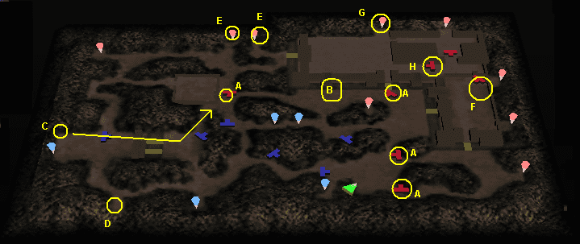

|  1.マップを巡り、Ａにいる武将を倒していく。(雲梯が出てくるまでに全員を倒せるとよい。) 2.雲梯が出てきたら、雲梯を守るか、本陣を守るかを選ぶ。 雲梯を守る場合 3.Ｂに群がる雑魚を倒す。 4.Ａの武将で倒していない者がいる場合は、倒す。 5.Ｃに現れた武将二人が矢印の先端付近まで移動しているはずなので、倒す。 (この時点で本陣は落ちているはず。) 6.Ｃ、Ｄ、Ｅの拠点をつぶし、追撃部隊を立つ。 7.ＦもしくはＧへ向かう。 8.Ｆへいった場合は、拠点をつぶし、武将を倒す。 8'.Ｇへいった場合は、拠点をつぶし、Ｈにいる司馬懿を倒す。 9.Ｇへ行き、拠点をつぶし、Ｈにいる司馬懿を倒す。 9'.Ｆへ行き、拠点をつぶし、武将を倒す。 10.曹操を倒す。 本陣を守る場合 3.Ｃへ向かい、武将二人を倒し、拠点をつぶす。 (この時点で、雲梯は壊れているはず。) 4.Ｄへ向かい拠点をつぶす。 5.Ｅへ向かい拠点をつぶす。 6.Ｂへ移動し、倒していないＡの武将を倒す。 7.その後は、雲梯を守る場合の7.と同じ。 |